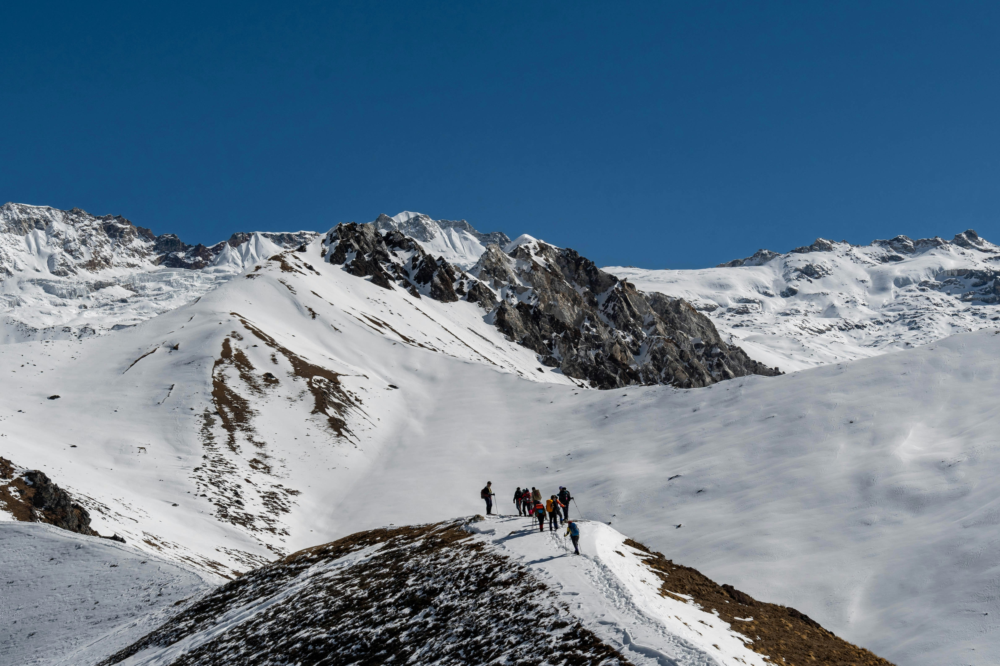
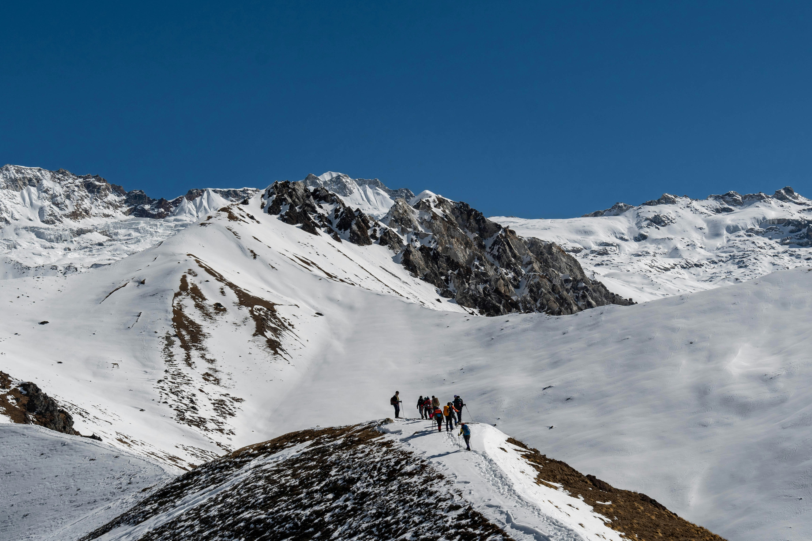
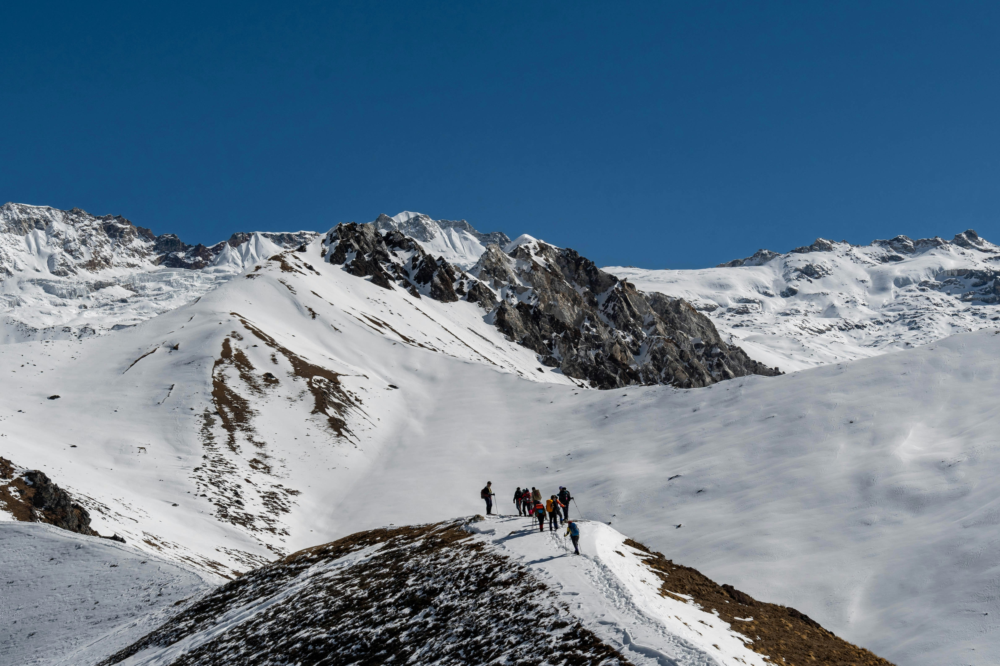

Gallery


 



The scenic Langtang Valley is Nepal’s closest Himalayan trekking destination, blending mountains, rivers, forests, and rich Tamang culture.
xLocation: Bagmati Province, north of Kathmandu
Altitude: 2,300 m – 4,984 m (Langtang Lirung Peak)
National Park: Langtang National Park (est. 1976)
Area: Approx. 1,710 km²
Known For: Alpine landscapes, Tamang culture, rich biodiversity, trekking
The valley is dominated by Langtang Lirung (7,227 m) and surrounded by pristine forests, alpine meadows, and rivers fed by glacial streams.
Langtang is home to Himalayan wildlife and diverse plant species:
| Category | Notable Species |
|---|---|
| Mammals | Red Panda, Himalayan Black Bear, Musk Deer, Langur, Himalayan Tahr, Snow Leopard (rare) |
| Birds | Monal Pheasant, Blood Pheasant, Himalayan Griffon, various migratory species |
| Plants | Rhododendron, Oak, Bamboo, Pine, Fir, Juniper |
| Trek | Duration | Highest Point | Highlights |
|---|---|---|---|
| Langtang Valley Trek | 7–10 days | Langtang Lirung Base (~4,984 m) | Rivers, alpine meadows, Tamang villages, mountain views |
| Langtang Gosainkunda Trek | 10–12 days | Gosainkunda Lake (4,380 m) | Sacred alpine lake, Rhododendron forests, panoramic views |
| Langtang Helambu Trek | 12–14 days | Langtang Lirung / Tarkeghyang (4,500 m) | Combination of Helambu and Langtang regions, cultural and scenic diversity |
Tamang festivals, traditional music, and Buddhist prayer flags give trekkers a glimpse of the local culture.
